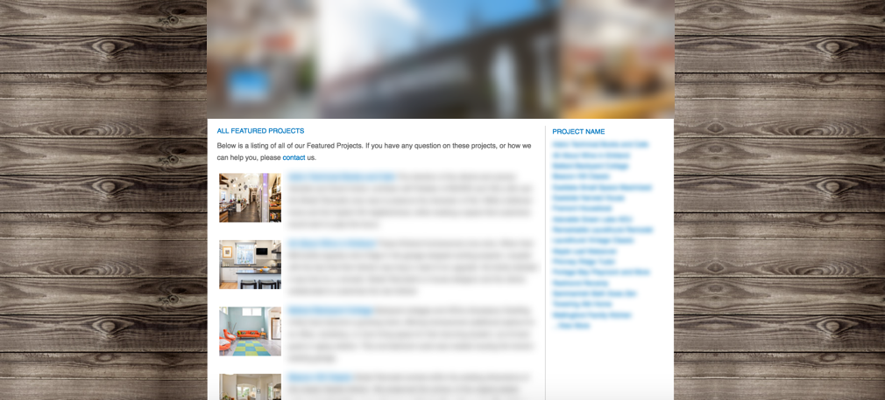

Focus: Information Architecture, Wireframing, Usability
Finding the right balance in providing site users with plenty of information, but not overwhelming them, is a delicate task. Here is an example of a site that could benefit from reorganization.
The goals for the current site design are to:
Site visitors could experience several problems when navigating this website.
This site certainly takes a “more is better” approach, with 36 featured projects and even more non-featured projects.
The following wireframe provides one possible solution. It keeps the company’s desire for plenty of project content, but organizes it into one place. Controlled, clean navigation lets the user play around with content without getting lost in the weeds. They can browse through many project photos quickly or focus on examples from a single category.